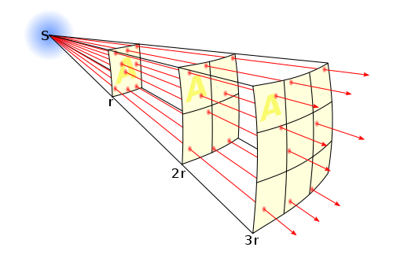
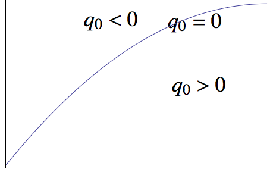
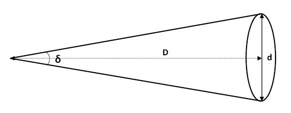

Why is Cosmology Dedicated to Finding Two Parameters Before 90’s
Basically, the cosmology before the 90’s have only two tasks. The first one is to find out the Hubble constant, while the second one is looking for the deceleration parameter.
We don’t rush to define what Hubble constant and deceleration parameter are, but have a look at what observations do at that time.
Astronomers are really good at measuring distances. They have infinite tricky ways to find out some distance.
We can find out how bright a star is by observation. One way to represent the brightness is to use the energy crossed per unit area per unit time at the observer, because this is what our eyes do.
This quantity is related to how much energy was emitted at the star, how far we are from the star. The more energy the star emitted, the brighter it look like. The nearer the star is, the brighter it is. Just like what we feel like with a candle.
This schematic picture shows that energy spread out on a surface because the total energy is conserved. Isotropic energy flux through the same solid angle at different radius must be the same.
Through a very simple calculation, it is as simple as
We are dealing with Cosmology now. The space-time manifold should be a great concern. The luminosity turns out to be
Here d is the physical distance between the star and the observer. L is the absolute luminosity of the star, which stands for the power of the star. z is the redshift of the star.
The first \(\frac{1}{1+z}\) term comes from the fact that the energy of each photon decrease due to expansion of the universe, while the second is the result that the rate of photons arrived at the observer is less.
We are happy to define
then the luminosity becomes simpler,
Now we come back to have a look at this luminosity.
We can measure how much energy is passing through a unit area at a unit time, which means we can determine this luminosity directly from observations.
We can predict the absolute luminosity from a star evolution model.
The \(d_L = d (1+z)\) is only valid for a flat universe, with curvature term \(K=0\) in Friedmann equation.
Then we can find out this so called luminosity distance
from some data.
We don’t just do the observation for the luminosity distance itself. We observe to test theories.
What is this distance in theory?
Wait, didn’t we just mention that this is only valid for a flat universe? So we just do some extension.
where R(d) is a function of d and can be determined through geometry,
Spherical: \(4\pi \sin^2 d\) ,
Flat: \(4\pi d\) ,
Hyperbolic: \(4\pi \sinh^2 d\) .
For nearby objects, we can always use flat geometry and use Taylor expansion at current time for a(t).
Luminosity distance is
where r is the comoving distance and a(t) is the scale factor at time t.
We know
So we are happy to use Taylor expansion around \(t_0\) for \(a(t)\), and keep only up to the second order of time. And do some substitution with
We then do the same thing on redshift
Finally, we can find out the relation \(r(z)\), which leads us to the result we need, \(d_L(z) = H_0^{-1} (z - \frac12 (1+q_0) z^2)\).
For very near objects (not as near as our sun of course),
This is a model independent observation and derivation. We can draw a line to represent the case when deceleration parameter is zero, lines higher than this stands for a accelerating universe while lower region show a decelerating universe.
We can show that for a vacuum energy dominated universe, the line would go up and for a matter dominated universe, it would below the zero deceleration line.
In this model independent method, the only two parameters occur are Hubble constant \(H_0\) and deceleration parameter \(q_0\) .
Angular diameter distance is really useful if we have some standard ruler. Now assume we have a ruler d, we can find out the angle between the two ends of the ruler, by some kind of measurement.
At the same time, we can use magic of math
Now as we already find out what \(\theta\) is by a measurement, and we said about the d is a standard ruler, which means we know the length of it very well. Then we can find out the distance \(D\), which is the distance between us and the standard ruler.
We can find out this kind of distance, which we will denote it as \(d_A\) from now on. What is it for?
A angular diameter distance is the physical distance between us and the standard ruler,
We can use the same trick we used in luminosity distance calculations, and it is easy to find that
Again, the observation is related to only two parameters, Hubble constant \(H_0\) and deceleration parameter \(q_0\).
It is hard to imagine that we really have some standard rulers. In fact, we do. They are
Sound Horizon at Recombination
Now we can see anything that is only (simply) related to physical or comoving distance can be determined by this trick. The result is that only two cosmological parameters would come in our equation as long as we keep only upper to order two of redshift.
Here another example is the galaxy number count.
© 2017, Lei Ma. | Created with Sphinx and . | On GitHub | Neutrino Notebook Statistical Mechanics Notebook | Index | Page Source